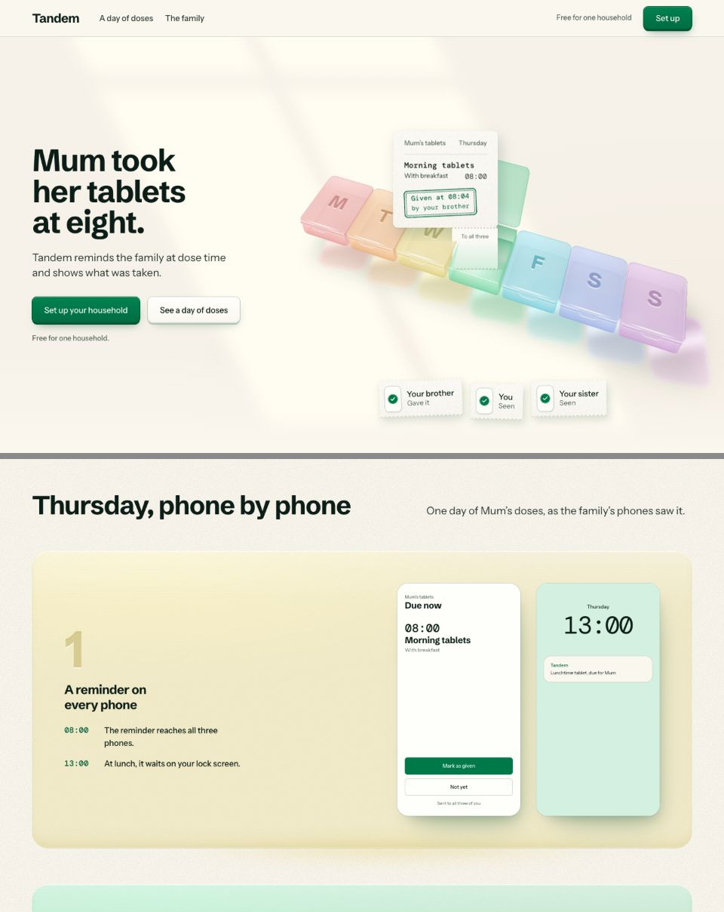
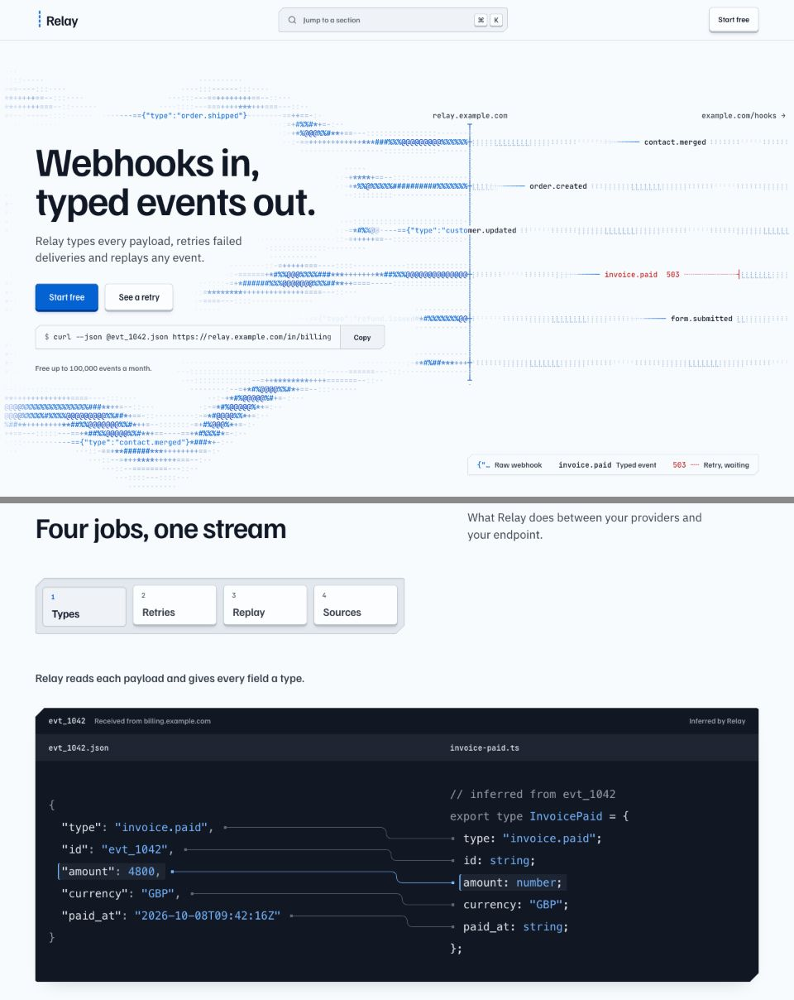

Claude Code for your own week
A terminal assistant that reads your files and does the work.
See five uses# once, to install
npm install -g @anthropic-ai/claude-code
# then, in any folder
cd ~/notes
claude
# and ask in plain words
> quiz me on biology.md, ten questionsNeeds Node 18 or later.
Five jobs it can take off you
| For | You type | You get |
|---|---|---|
| Studying | quiz me on biology.md, ten questions | A quiz you can retake |
| Studying | explain chapter 3 simply | A plain summary |
| Money | total march.csv by category | Your spending |
| Admin | rename the scans in Downloads by date | Tidy files |
| Planning | plan revision for my exams | A printable timetable |
What Hallmark adds to a page
Hallmark checks every page before you see it.
$ node sloplint.mjs fixtures/slopped.html
FAIL 2a purple-to-blue gradient text on h1
FAIL 34 overflow-x: hidden on html
FAIL 55a uppercase head, line-height 0.94
REFLEX 1 display font "poppins"
REFLEX 38ii italic display type on h2
sloplint: 24 FAIL, 15 REFLEX, 4 WARN across 1 file(s).The floor never ships
Low contrast, a broken phone layout or an invented number stops the page.
Habits need a reason
Every model’s default moves get fixed, or excused with a written reason.
Then a fresh pair of eyes
It checks eight screen widths in a real browser, then a fresh reviewer decides.
This page was dealt three themes
Three of fifty, picked to fit the request.

BlueprintA drafting sheet in prussian blue 
DoseWarm paper and one pharmacy green 
Cobalt, pickedHairlines, keycaps and code on graphite
Before you try it
- Do I need to code?
- No. You ask in plain English; it writes the code.
- What can it see?
- The folder you start it in. It asks before changing anything.
- Is Hallmark free?
- Yes, under the MIT licence.
- Can Hallmark make slides?
- It builds web pages, so this one scrolls.
Two lines to start
Then type /hallmark and describe a page.
npm install -g @anthropic-ai/claude-codenpx skills add nutlope/hallmark -gBoth need Node 18 or later.